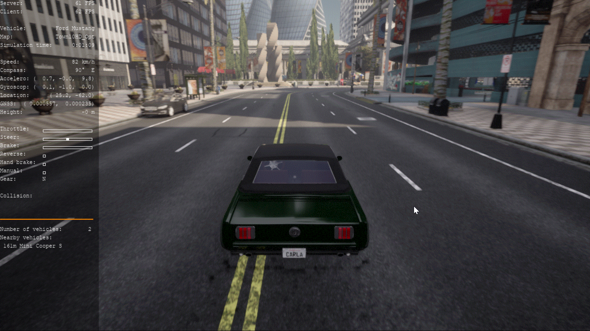

Chrono 集成¶
本指南概述了 Chrono 是什么、如何在 Carla 中使用它以及集成中涉及的限制。
Chrono 项目 ¶
Project Chrono 是一款开源多物理场模拟引擎，它使用基于模板的方法提供高度真实的车辆动力学。Carla 中的集成允许用户在导航地图时利用 Chrono 模板来模拟车辆动力学。
在 Carla 上使用 Chrono ¶
要使用 Chrono 集成，您必须首先在启动时使用标签配置服务器，然后使用 PythonAPI 在生成的车辆上启用它。请阅读以获得更多详情。
配置服务器 ¶
仅当 Carla 服务器使用 Chrono 标签编译时，Chrono 才会工作。
在从 Carla 的源代码构建版本中，运行以下命令来启动服务器：
make launch ARGS="--chrono"
!!! 注意
使用上述命令编译后，再运行make launch、make package则编译报错：Unreal\CarlaUE4\Plugins\Carla\CarlaDependencies\include\Eigen\src/Core/util/ForwardDeclarations.h(58): error C4067: 预处理器指令后有意外标记 - 应输入换行符，需要用make launch ARGS="--chrono"，不能用make launch启动，原因不明。
启用 Chrono 物理 ¶
Chrono 物理是通过 Actor 类提供的 enable_chrono_physics 方法启用的。除了子步骤和子步骤增量时间的值之外，它还需要三个模板文件和一个基本路径来定位这些文件：
base_path: 包含模板文件的目录路径。这对于确保从模板文件引用的辅助文件具有用于搜索的公共基本路径是必要的。vehicle_json: 相对于base_path的车辆模板文件 .tire_json: 相对于base_path的轮胎模板文件。powertrain_json: 相对于base_path动力总成模板文件。
!!! 重要 仔细检查您的路径。不正确或缺失的路径可能会导致虚幻引擎崩溃。
Build/chrono-install/share/chrono/data/vehicle 中提供了适用于不同车辆的各种示例模板文件。阅读 Chrono 工程的文档 （或参考中文文档），了解有关其车辆示例以及如何创建模板的更多信息。
请参阅下面的示例，了解如何启用 Chrono 物理：
# 生成车辆
vehicle = world.spawn_actor(bp, spawn_point)
# 设置基础路径，后面的模板文件路径都是在这个基础路径下
base_path = "D:/work/workspace/carla/Build/chrono-install/data/vehicle/"
# 设置模板文件路径
vehicle_json = "sedan/vehicle/Sedan_Vehicle.json"
powertrain_json = "sedan/powertrain/Sedan_SimpleMapPowertrain.json"
tire_json = "sedan/tire/Sedan_TMeasyTire.json"
# 启用 Chrono 物理特性
vehicle.enable_chrono_physics(5000, 0.002, vehicle_json, powertrain_json, tire_json, base_path)
首先进入 网盘 的目录 software/car/fisheye-camera 下载支持chrono的可执行场景。然后可以使用 PythonAPI/examples 中的示例脚本 manual_control_chrono.py 尝试 Chrono 物理集成。运行脚本后，按Ctrl + o启用 Chrono。下面显示高速转弯时，方向盘打死会翻车的情况：

局限性 ¶
此集成不支持碰撞。当发生碰撞时，车辆将恢复为 Carla 默认物理状态。